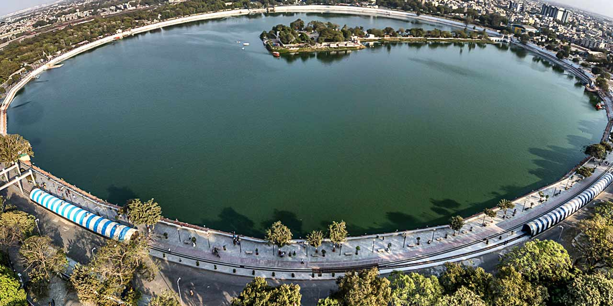

The History of Gujarat is varied and unique. The first settlers in the state of Gujarat were Gurjaras
who happened to be ethnic group of India. Be that as it may, the most punctual Archeological follows
demonstrate the Indus Valley Civilization as verifiable relics with the Stone Age settlements are found in
Gujarat around Sabarmati and Mahi streams.
Its underlying foundations are additionally in the Harappan follows found at Lothal, Rampur, Amri and
different spots. Ancient Gujarat was governed by the Maurya Dynasty. Ruler Chandragupta Maurya conquered
various states in Gujarat while his grandson, King Ashoka broadened his area in Gujarat. The rules of the
initial three Mauryas were noteworthy however with Ashoka's demise in 232 B C the Mauryan realm started to
disintegrate, prompting political defragmentation. The Shungas who succeeded the Mauryas attempted,
ineffectivelyto maintain the similarity to political solidarity.
In 2001, after the loss of 2 assembly seats in by-decisions, Shri Keshubhai Patel surrendered and yielded
capacity to Shri Narendra Modi. The BJP held a larger part in the 2002 political race, and Shri Narendra Modi
has filled in as Chief Minister of the state since 7 October 2001 to 21st May 2014.
The culture of Gujarat is a vibrant and it is famousfor its true colors of rich history and traditions. The
state is a blend of many religions like Hinduism, Islam, Jainism and Buddhism. And Gujarati culture blends in
arts, beliefs, customs, languages, technology and values. From vivid Festivals and fairs, intriguing
expressions and specialties to folk dances, yummy Gujarati delicacies form a significant social background of
the individuals who explicitly have a place with Gujarat.The customs and beliefs make the culture more
attractive and a true mix of values and moral values.Experience the culture and festivals on Gujarat tour will
surely be a one of a kind experience. The traditional and authentic Gujarati food is delicious and consists of
daal, roti, khichdi, vegetables, kadhi, and rice.
Apart from all this Gujarat are also home to amazing handicraft products. And the handicrafts are not only
famous in India but all across the globe. These products include jewellery, embroidery works, leatherwork,
metal work, mirror work and much more.
Statue of Unity
The statue has been built as an ode to the Iron Man of India, Sardar Vallabhbhai Patel, the first home
minister of independent India. He was responsible for uniting all 562 princely states of the country to build
the Republic of India.
October 31st, 2018, marked the inauguration of the world’s tallest statue – the Statue of Unity, against the
backdrop of the dramatic Satpura and Vindhyachal hills in Kevadia, Gujarat. The 182-metre (600 feet aprox.)
statue is dedicated to Sardar Vallabhbhai Patel, the architect of independent India. The colossal monument
towers over River Narmada, a tribute to India ‘from the people of Gujarat’ to the leader who placed people’s
welfare first. The Statue of Unity overlooks the vast surrounds and the river basin of the Narmada River and
the sprawling Sardar Sarovar dam. It stands on the Sadhu Bet hillock, connected by a 300-metre bridge, which
offers access from the mainland to the statue.
As a part of an outreach programme for the project, the state government had asked Indian farmers to donate
their used farming equipment to collect iron needed for the statue of Sardar Patel. Eventually, about 5000
tonnes of iron is believed to be collected. Details of the construction and history of the leader can be seen
in an in-house museum, inside the statue.
The Sardar Sarovar Dam is the third highest concrete dam (163 metres) in India after Bhakra (226 metres) in
Himachal Pradesh and Lakhwar (192 metres) in Uttar Pradesh. In terms of volume of concrete involved for
gravity dams, this dam is ranked as the second largest in the world with an aggregate volume of 6.82 million
cubic metre; only after Grand Coulee Dam in the USA with a total volume of 8.0 million cubic metre being the
largest.
Gujarat State Forest Development Corporation Ltd. (GSFDC) has initiated Boat ride in Dyke-3 known as Panchmuli
Lake in Kevadia as a part of eco-tourism activity. Boating facility has been developed with the help of an
external professional entity. Tourists coming to Kevadia are also enjoying the pristine nature with this boat
ride. Total duration of each ride is for 45 minutes and in a day eight rides are operationalized by the
operator. This ride takes you to the waters of dyke-4 as well as the entire water body is surrounded by lush
green forests. Ecosystem around the lake is very rich in flora and fauna.
Glory of Somnath Mandir
The intricately carved honey-coloured Somnath temple on the western edge of the state is believed to be
the place where the first of the twelve holy jyotirlingas emerged in India – a spot where Shiva appeared as a
fiery column of light. The temples lies at the meeting of Kapila, Hiran and Sarasvati rivers and the waves of
the Arabian Sea ebb and flow touching the shore on which it is constructed. The ancient temple’s timeline can
be traced from 649 BC but is believed to be older than that. The present form was reconstructed in 1951.
Colourful dioramas of the Shiva story line the north side of the temple garden, though it’s hard to see them
through the hazy glass. A one-hour sound-and-light show in Amitabh Bachchan’s baritone highlights the temple
nightly at 7.45pm.
It’s said that Somraj (the moon god) first built a temple in Somnath, made of gold; this was rebuilt by Ravana
in silver, by Krishna in wood and by Bhimdev in stone. The current serene, symmetrical structure was built to
traditional designs on the original coastal site: it’s painted a creamy colour and boasts a little fine
sculpture. The large, black Shiva lingam at its heart is one of the 12 most sacred Shiva shrines, known as
jyotirlinga.
A description of the temple by Al-Biruni, an Arab traveller, was so glowing that it prompted a visit in 1024
by a most unwelcome tourist – the legendary looter Mahmud of Ghazni from Afghanistan. At that time, the temple
was so wealthy that it had 300 musicians, 500 dancing girls and even 300 barbers. Mahmud of Ghazni took the
town and temple after a two-day battle in which it’s said 70,000 defenders died. Having stripped the temple of
its fabulous wealth, Mahmud destroyed it. So began a pattern of destruction and rebuilding that continued
forcenturies. The temple was again razed in 1297, 1394 and finally in 1706 by Aurangzeb, the Mughal ruler.
After that, the temple wasn’t rebuilt until 1950. The best time to visit Somnath Temple is in the cooler
months of October to February, though the site is open all through the year. Shivratri (usually in February or
March) and Kartik Purnima (close to Diwali) are celebrated with great enthusiasm here.
Rann of Kutch
The Rann of Kutch, a unique region in Gujarat, is one of the largest salt deserts in the world. This
remarkable place with its surreal landscapes is a photographer’s delight, and has in the recent years grown
popular as a destination for offbeat travel. If you want to know the best time to visit the Rann of Kutch,
read on to learn why you should visit the Rann during the Rann Utsav, the great Rann Festival held annually.
The Rann Utsav takes place during the winter months, from October to February. This is really the best time to
visit the Rann of Kutch, when the weather is pleasant and perfect for sightseeing.If you visit the Rann of
Kutch during the Rann Utsav, you will have access to the best options for stays really close to the White Salt
Desert. These include places like the luxury White Rann Resort, offering air-conditioned tents and mud bhungas
with all the expected modern conveniences, which are set up especially for the Rann Utsav. If you prefer
greater comfort in your choice of accommodation, then the Rann Utsav is definitely the best time to visit the
Rann of Kutch!
Rann Utsav packages come with many included and optional sightseeing tours of other interesting places nearby
such as Bhuj, Dhordo, Mandavi Beach, and Dholavira etc. This allows the interested traveller to experience
other places in Gujarat apart from the Rann of Kutch, in the same trip.
The Rann of Kutch is known for its colourful crafts and intricate artwork, and the Rann Festival is a
celebration of all things Kutchi. No wonder therefore, that visitors to the Rann Utsav get multiple
opportunities to explore the stalls set up by local craftsmen and artisans and take back beautiful artwork as
souvenirs. For the rest of the year, the Rann of Kutch remains largely unvisited, and known for its animal and
birdlife. However, during the Rann Utsav, you can get to enjoy a variety of specially organized adventure
activities here, such as Para motoring, parasailing, Segway rides, ATV rides, camel cart rides, etc.
Girnar Mountain
This sacred mountain also known as Revatak Parvata, rising dramatically from the plains, is covered
with Jain and Hindu temples. Pilgrims from far and wide come to tackle the long climb up 10,000 stone steps to
the summit, which is best begun at dawn. Be prepared to spend a full day if you want to reach the uppermost
temples. Ascending in the early morning light is a magical experience, as pilgrims and porters trudge up the
steps.The Jain temples, a cluster of mosaic-decorated domes interspersed with elaborate stupas, are about
two-thirds of the way up. The largest and oldest is the 12th-century Temple of Neminath, dedicated to the 22nd
Tirthankar: go through the first left-hand doorway after the first gate. Many temples are locked from around
11 am to 3 pm, but this one is open all day. The nearby triple Temple of Mallinath, dedicated to the ninth
Tirthankar, was erected in 1177 by two brothers. During festivals, this temple is visited by several monks and
spiritual heads.
Further up are various Hindu temples. The first peak is topped by the Temple of Amba Mata, where newly-weds
worship to ensure a happy marriage. Beyond here there is quite a lot of down as well as up to reach the other
four peaks and further temples. The Temple of Gorakhnath is perched on Gujarat’s highest peak at 1117m. The
steep peak Dattatraya is topped by a shrine to a three-faced incarnation of Vishnu. Atop the final outcrop,
Kalika is a shrine to the goddess Kali.
Girnar Hill is believed to be the Nirvana bhumi of 22nd Tirthankara Lord Neminatha. A temple that commemorates
the Tirthankara was built in the 11th century.The best time to visit is between November and February. The
Bhavnath Mela over five days in the month of Magha (January–February) brings folk music and dancing and
throngs of nagas (Saivite holy men) to Bhavnath Mahadev Temple at Girnar Taleti. It marks the time when Shiva
is believed to have danced his cosmic dance of destruction. The Girnar Parikrama festival is held in November.
Kankaria lake

Kankaria lake can be found in the south-eastern section of Ahmedabad near the Maninagar area, in
Gujrat. It is said to be the second largest lake in the city. Multiple tourist spots like the zoo, kids city,
toy-train, hot-air balloon ride, water-based rides and other such entertainment attractions are in abundance
in the lakefront that has been developed around Kankaria lake. However, it wasn’t like this since the
beginning.The construction of the lake was done by some of the finest Mughal architects of the time as evident
from the different cuttings and designs in the stones that have been employed to construct the polygonal
shaped reservoir that resides right in the middle of this lake.Kankaria lake consists of an island that
encompasses Nagina Wadi, which is a garden, right in the middle of it. This place in itself is a beautiful
tourist spot here. Nagina means jewel here. The garden further consists of a summer palace which goes by the
name of Ghattamandal.A bridge connects with the bank that was originally 48 arches long. Many have mentioned
this kind of architecture as a magnificent piece of the Mughal era, and just like a centre piece in jewellery,
it is also known as the centre jewel of the lake.
The actual origin for the name Kankaria is unknown, yet various stories roam about. One of them says that the
name Kankaria was chosen due to the huge piles of limestone that was dug out during its excavation for
formation of the artificial lake.
Another story says that Sultan Qutb-ud-Din had posed a question to Shah Alam, who was a saint, to select a
location for the garden and the tank, who then scattered pebbles and built the lake, thereby owing the name
Kankaria lake.There are numerous attractions to enjoy at Kankaria lake. From zoos and parks to different kinds
of rides, this place demands at least a couple hours of your time to enjoy it heartily.
The Kankaria Zoo is easily one of the top most visited tourist destinations in Kankaria lake. Some may wonder
what's so special about this just-another zoo? Well, this zoo was once the best rated zoo in the whole of
Asia. It cages various varieties and species of animals including reptiles,mammals, carnivores and predators.
Children and adults alike are sure to learn many things about the animals present here through the tour that’s
available in the zoo.
Akshar Dham
'Akshardham' literally means the divine abode of God. It is an eternal place for one to offer devotion
and experience everlasting peace. Swaminarayan Akshardham at Gandhinagar is a mandir – a Hindu house of
worship, a dwelling place for God, and a spiritual and cultural campus dedicated to devotion, education and
unification. Timeless devotional messages and vibrant Hindu traditions are echoed in its art and architecture.
The mandir is a humble tribute to Bhagwan Swaminarayan (1781- 1830) and the avatars, devas and sages of
Hinduism. This traditionally-styled complex was inaugurated on October 30th, 1992 with the blessings of HH
Pramukh Swami Maharaj and through the devoted efforts of skilled artisans and volunteers.
Each element of Akshardham echoes with spirituality – the mandir, the exhibitions and even the gardens. The
Akshardham mandir has over two hundred murtis (idols), representing spiritual stalwarts from over many
millennia. The spiritual premise of Akshardham is that each soul is potentially divine. Whether we are serving
the family, our neighbors, the country, or people all around the world, each act of kindness can help one move
towards divinity. Each prayer is an endeavor in self-improvement and a step closer to God.
A visit to Akshardham is an enriching experience. Whether it is in realizing the power of prayer, in feeling
the strength of non-violence, in becoming aware of the universal nature of Hinduism’s ancient principles, or
just in admiring the beauty of God’s abode on Earth – each element has a resounding significance.


.jpg)